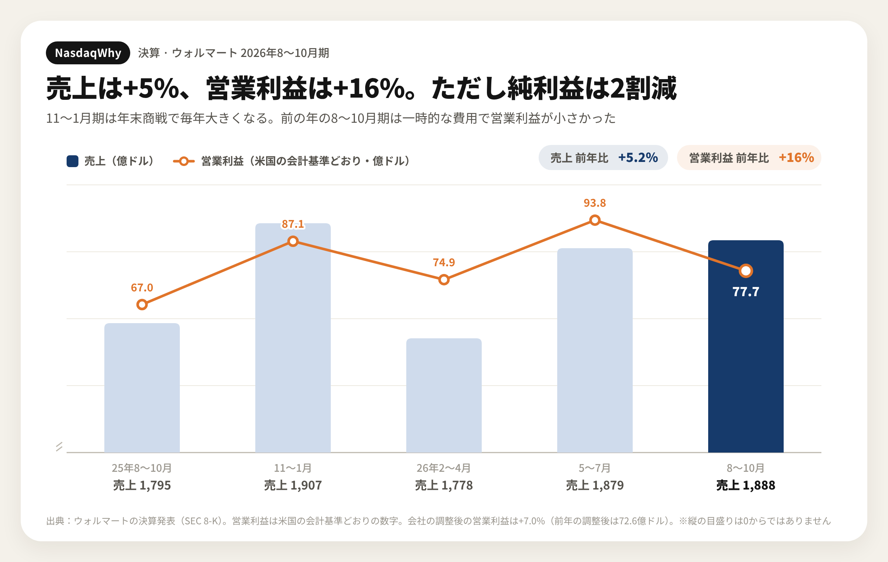
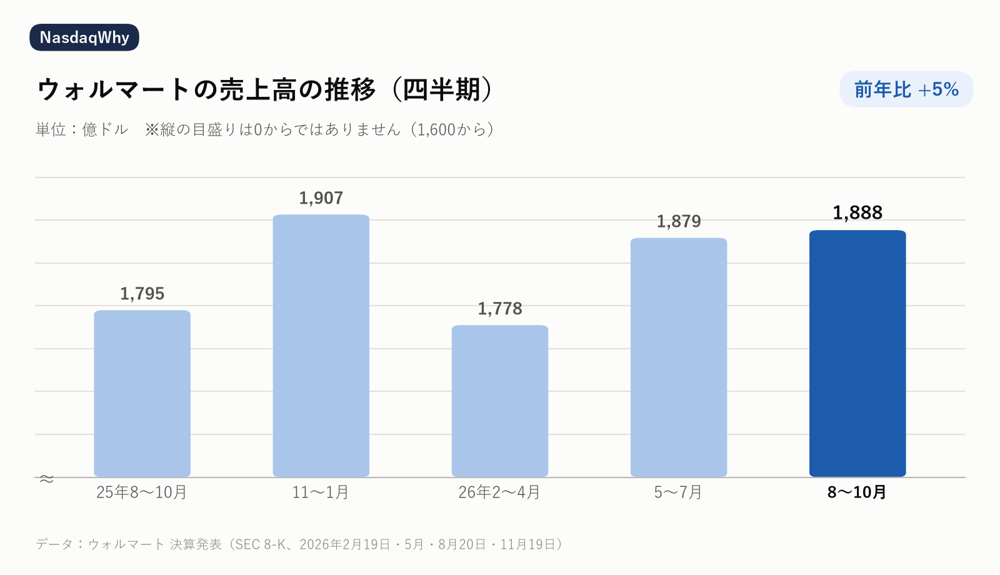
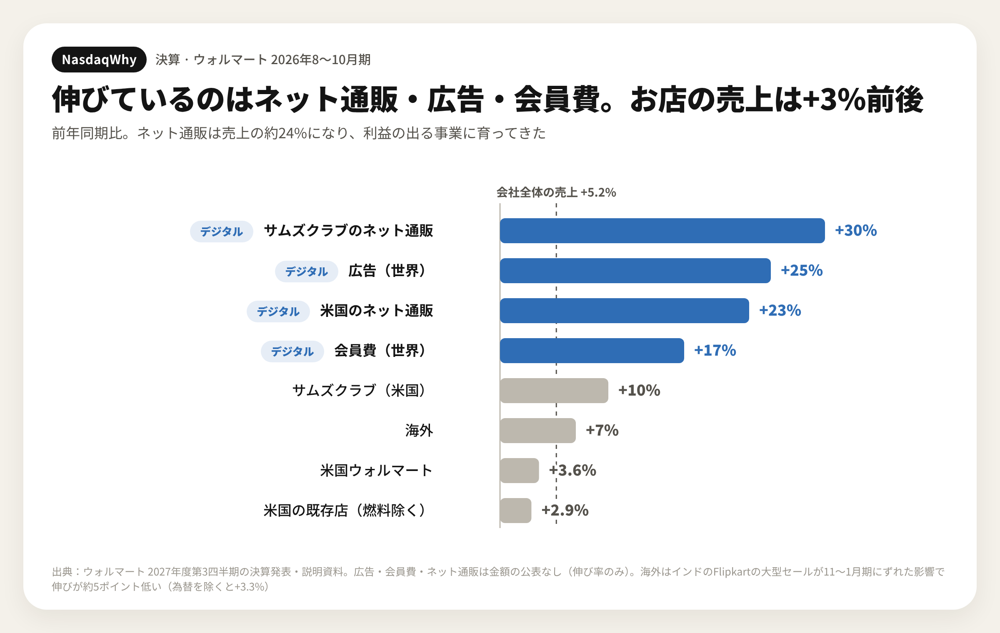
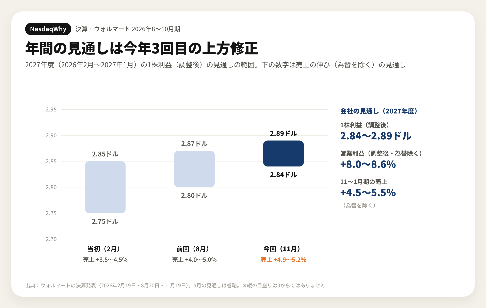
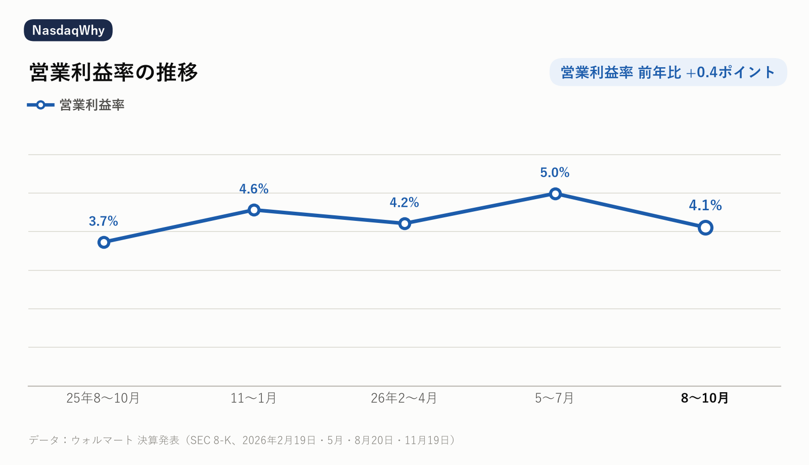
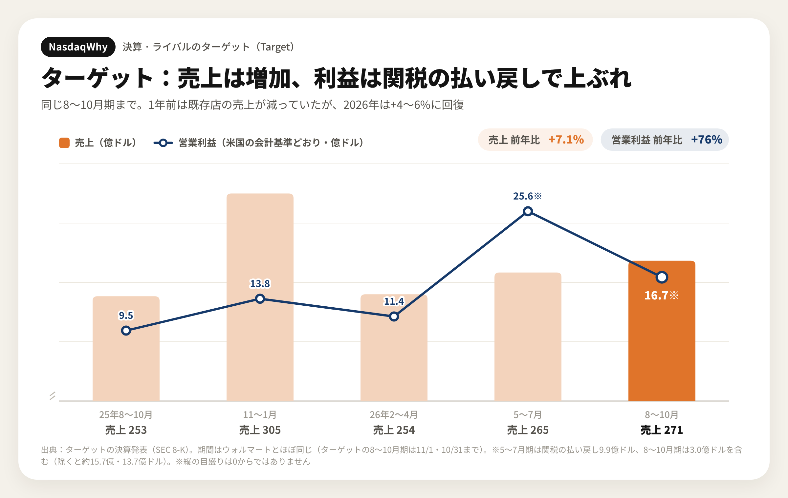
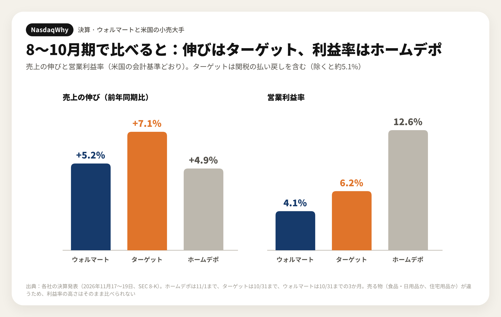

WMT｜2026年8〜10月期（2027年度第3四半期）の決算｜決算発表 2026年11月19日（米国の取引開始前）
ウォルマートの決算：営業利益は16%増えたのに、なぜ純利益は2割減った？
米国の小売最大手ウォルマートの8〜10月期（2027年度第3四半期）は、売上が前年同期比5.2%増の1,888億ドル、営業利益は16%増の77.7億ドルだった。一方、純利益は20%減の49.5億ドル。ウォルマートは米国の小売の売上で1位（2025年の米国の小売売上は約5,800億ドルで、2位のアマゾンの約2倍。全米小売業協会（NRF）の2026年ランキング）。年間の見通しは今年3回目の上方修正となった。

売上は四半期ごとに1,780億〜1,910億ドルで、11〜1月期は年末商戦で大きくなる。営業利益（米国の会計基準どおり）は77.7億ドルで、前年同期の67.0億ドルから+16%。前の四半期（93.8億ドル）より少ないのは、5〜7月期が季節的に利益の出やすい時期だったため。
主な数字（2026年8〜10月期（2027年度第3四半期））
| 今回 | 前年同期 | 前年比 | |
|---|---|---|---|
| 売上高 | 1,888億ドル | 1,795億ドル | +5.2% |
| 営業利益 | 78億ドル | 67億ドル | +16.0% |
| 営業利益率 | 4.1% | 3.7% | |
| 純利益 | 49億ドル | 61億ドル | -19.5% |
8〜10月期の事業別の売上
| 事業 | 売上 | 前年同期比 |
|---|---|---|
| 米国ウォルマート | 1,250億ドル | +3.6% |
| 米国の既存店 | 燃料除く | +2.9% |
| 米国のネット通販 | 非公表 | +23.0% |
| 海外 | 359億ドル | +7.0% |
| サムズクラブ（米国） | 259億ドル | +10.0% |
| 広告（世界） | 非公表 | +25.0% |
| 会員費（世界） | 非公表 | +17.0% |

事業別に見ると：伸びているのはデジタル
伸びが大きいのは、ネット通販（サムズクラブ+30%、米国のウォルマート+23%）・広告（世界+25%）・会員費（世界+17%）。お店の売上（米国の既存店、燃料除く）は+2.9%。
海外は+7.0%（為替を除くと+3.3%）。インドのFlipkartの大型セールが11〜1月期にずれたため、海外の伸びが約5ポイント低くなった。その分、11〜1月期は約1ポイント押し上げられる見込み。
米国の店から届ける配達はネット通販の売上の4割を超え、その37%以上が3時間以内に届いている（会社の説明）。10/20には会員サービス「Walmart+」とサムズクラブの会員をまとめた120ドルのセットも始めた。

会社の見通し（2027年度）
| 売上（為替除く） | +4.9〜5.2%（前回+4〜5%） |
|---|---|
| 営業利益（調整後） | +8.0〜8.6%（前回+7〜8.5%） |
| 1株利益（調整後） | 2.84〜2.89ドル（前回2.80〜2.87） |
| 11〜1月期の売上 | +4.5〜5.5%（為替除く） |
- 2027年度（2026年2月〜2027年1月）の見通しを引き上げた。売上（為替を除く）は+4.9〜5.2%（前回は+4.0〜5.0%）、調整後の1株利益は2.84〜2.89ドル（前回は2.80〜2.87ドル）。今年3回目の上方修正。
- 11〜1月期は、売上（為替を除く）+4.5〜5.5%、調整後の1株利益0.73〜0.78ドルの見通し（説明会での説明）。
- 最高財務責任者のジョン・デビッド・レイニー氏は、見通しは「今の売上の流れとシェアの拡大が11〜1月期も続く」前提だと説明した。2028年度の見通しは次の決算で出す。
年間の見通しは今年3回目の上方修正
調整後の1株利益の見通しは、2月の2.75〜2.85ドルから、8月に2.80〜2.87ドル、今回2.84〜2.89ドルへと引き上げられた。売上（為替を除く）の伸びの見通しも+3.5〜4.5%から+4.9〜5.2%に上がった。
ただし、年間の売上の見通しはアナリストの予想（約+5.5%）より低かった（報道）。

もうけの力

米国の小売大手と比べると
期間：ウォルマート・ターゲット・ホームデポは2026年8〜10月、アマゾンは7〜9月、コストコは6〜8月（16週）。利益率は米国の会計基準どおりの営業利益率。各社の決算発表から。
| 会社 | 売上高 | 前年比 | 利益率 |
|---|---|---|---|
| ウォルマート | 1,888億ドル | +5% | 4.1% |
| ターゲット | 271億ドル | +7% | 6.2% |
| ホームデポ | 434億ドル | +5% | 12.6% |
| コストコ | 957億ドル | +11% | 4.0% |
| アマゾン | 2,019億ドル | +12% | 13.9% |
事業の中身が違う。ウォルマート・ターゲット・コストコは食品・日用品が中心で、利益率は低くなりやすい。ホームデポは住宅用品。アマゾンは利益の多くをクラウド（AWS）で稼ぐので、利益率はそのまま比べられない。ターゲットは関税の払い戻し（3.0億ドル）を含み、除くと利益率は約5.1%。コストコは期間が16週で、会員費の割合が大きい。
ライバルのターゲット：同じ8〜10月期までの流れ
ターゲットは1年前、既存店の売上が減っていた（2025年8〜10月期は−2.7%）。2026年は+5.6%・+3.8%・+5.6%と回復し、8〜10月期の売上は271億ドル（+7.1%）。
営業利益は16.7億ドルだが、関税の払い戻し3.0億ドルを含む（5〜7月期も9.9億ドルを含む）。払い戻しを除くと約13.7億ドルで、利益率は約5.1%。

同じ期間で比べると
同じ8〜10月期どうしで比べると、売上の伸びはターゲット（+7.1%）、ウォルマート（+5.2%）、ホームデポ（+4.9%）の順。営業利益率はホームデポ（12.6%）が最も高く、ウォルマートは4.1%。
ウォルマートの利益率が低いのは、食品・日用品を安く大量に売る形のため。そのぶん、広告や会員費といった利益率の高い収入を増やして、利益率を上げようとしている。

決算説明会で会社が話したこと
【消費者】ジョン・ファーナーCEOは「安定して底堅い」と話した（4月と6月に一時弱い時期があった）。食品の値上がりは1〜2%程度。シェアは所得のどの層でも伸び、特に所得の高い家庭で大きく伸びた。
【費用と値段】燃料と輸送の費用は今年20億ドル以上増えた。最高財務責任者のジョン・デビッド・レイニー氏は、軽油の値段は「下がってきたが、大きな費用」と説明。関税の払い戻しは値下げに回した。
【AI】AIの買い物アシスタント「Sparky（スパーキー）」の利用は1年で+129%で、声や写真でも買い物ができるようになった。Sparky を使った買い物は金額が約4割大きい。お客が自分のAIエージェントをつなぐ仕組み（Agent Gateway）では、使える金額の上限を決めたり、いつでも止めたりできる。
【年末商戦】感謝祭の食事のセットは1人約3.5ドルと去年より約12%安い。七面鳥の販売数は約100万羽増える見込み。
出典：決算説明会の書き起こし（Investing.com）・AP・PYMNTS の報道。発言は英語からの要約。
NasdaqWhy の視点：データから読み取れる注目点
決算資料と各社の公式データを並べて読み取れることです。将来を予想するものではありません。
- 【なぜ営業利益は増えたのに、純利益は減ったか】純利益が減ったのは、本業ではなく「投資のもうけ」の差のため。1年前の8〜10月期は、持っている他社の株の値上がりで1株あたり0.20ドルのもうけがあった。今回は逆に0.03ドルの損になった。こうした一時的な分を除いた調整後の1株利益は0.65ドルで、前年の0.62ドルから+5%、市場の予想（0.64ドル）も少し上回った。
- 【なぜ営業利益の伸びは16%と7%の2つあるか】米国の会計基準どおりの営業利益は+16%。ただ、1年前は一時的な費用で営業利益が小さかった（会社の調整後では72.6億ドル）。会社の調整後で比べると+7.0%（為替を除くと+5.5%）で、会社が8月に示した+2〜4%は上回った。
- 【なぜ利益が伸びるか】ネット通販・広告・会員費という「デジタル」の部分が伸びている。世界のネット通販は+17%で売上の約24%になり、米国のネット通販は1件増えるごとの利益率が12%を超えた（会社の説明）。広告は世界で+25%、会員費は+17%。粗利益率は24.5%と0.28ポイント上がった。
- 【なぜ米国の既存店の伸びは2.9%に鈍ったか】米国の既存店（燃料除く）は+2.9%で、1年前の+4.5%より低い。お客の数は+1.5%、1回の買い物の金額は+1.4%。米国の公的な医療保険（メディケア）で薬の値段に上限がついた影響で、薬の売上が減ったことが重い。会社は11〜1月期も約1.25ポイントの押し下げを見込んでいる。
- 【なぜ値下げを続けられるか】今年は燃料と輸送の費用が20億ドル以上増えた。それでも会社は、関税の払い戻しを値下げに回したと説明。期間限定の値下げ（ロールバック）は約7,700品目と、ふだん（5,000〜5,500）より多い。感謝祭の食事のセットは1人約3.5ドルと、去年より約12%安くした。
- 【決算説明会から】ジョン・ファーナーCEOは、消費者は「安定して底堅い」と話した。シェア（お客の取り込み）は所得のどの層でも伸び、特に所得の高い家庭（年収10万ドル超）で大きく伸びた（AP の報道）。AIの買い物アシスタント「Sparky（スパーキー）」の利用は1年で+129%、Sparky を使った買い物は金額が約4割大きい。お客が自分のAIエージェントをつないで買い物できる仕組み（Agent Gateway）も始めた。
- 【同業と比べると】同じ8〜10月期で、売上の伸びはターゲット（+7.1%）が上、ホームデポ（+4.9%）はほぼ同じ。営業利益率はウォルマートが4.1%で、ターゲット（6.2%、関税の払い戻しを除くと約5.1%）やホームデポ（12.6%）より低い。食品・日用品が中心で、安く売って量で稼ぐ形のため。アマゾン（7〜9月、+12%）は伸びが大きいが、利益の多くはクラウドで稼いでいる。
- 【市場の予想との差】売上（1,888億ドル）と調整後の1株利益（0.65ドル）は予想を上回った（FactSet）。一方、年間の売上の見通し（+4.9〜5.2%）は、アナリストの予想（約+5.5%）より低く、1株利益の見通しの上限（2.89ドル）は予想と同じ水準だった（報道）。
次に確認したい決算・予定
- コストコの9〜11月期の決算（12/10）：会員制の大型店の伸びと比べる。
- 年末商戦（11/27のブラックフライデーから）：ネット通販と値下げの効果。
- ウォルマートの次の決算（2027年2月中旬の見込み）：2028年度の見通し、米国の既存店の伸び、広告とネット通販の利益。
関連リンク
出典：ウォルマート 2027年度第3四半期の決算発表・説明資料（2026年11月19日、SEC 8-K）・2026年度第4四半期〜2027年度第2四半期の決算発表・決算説明会（Investing.com の書き起こし、AP・PYMNTS・ppc.land の報道）。市場の予想は FactSet（AP の報道）。小売の順位は全米小売業協会（NRF）の2026年ランキング。同業はターゲット・ホームデポ（2026年11月）、アマゾン（10月）、コストコ（9月）の決算発表
📝 note でも読めます（図つき・まとめ）：note.com/nasdaqwhy